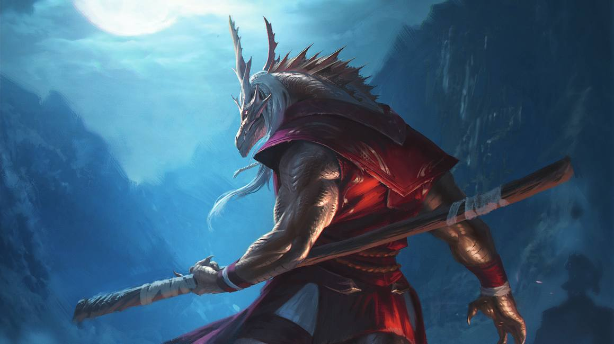

Una clase cuerpo que no necesita nada, su cuerpo es todo lo que necesita, su union con el ki les proporciona un gran daño, una defensa media y una serie de habilidades de combate unicas
Los monjes son una clase bastante única, no llevan armaduras y disponen de pocas armas, sin embargo son de las clases con mayor movimiento y habilidades de combate muy sobresalientes. El ki les da la capacidad de hacer ataques extra, esquivar mas ataques, detener enemigos y más. Ademas de tener muy buenos sentidos gracias a su basta sabiduria